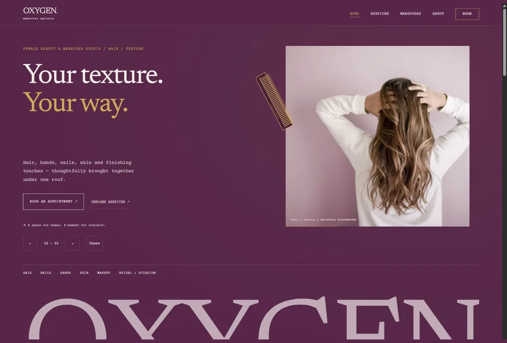
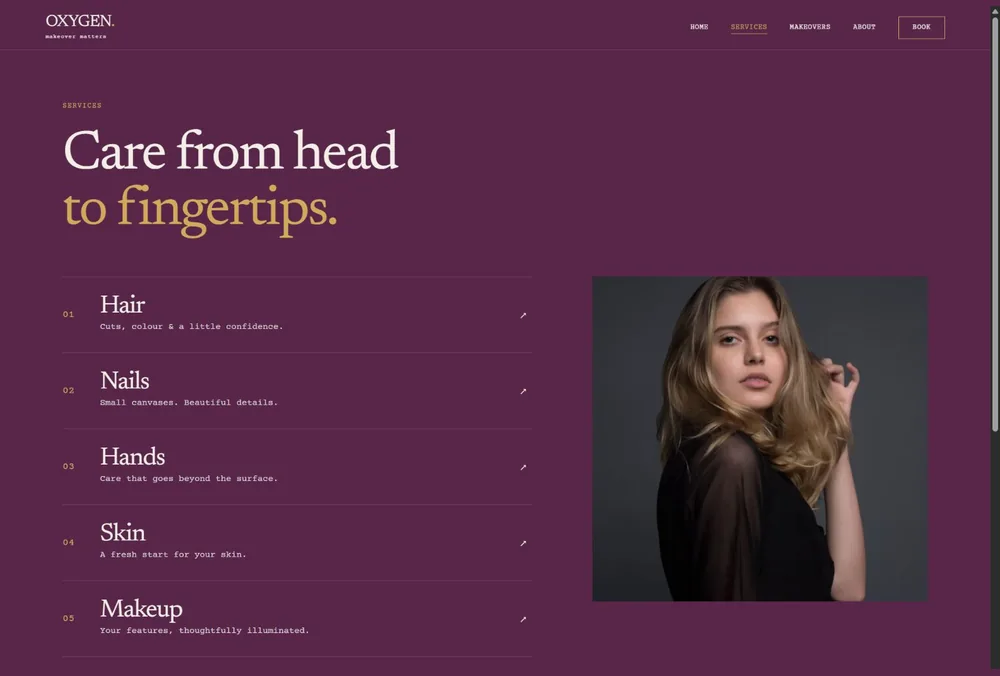

Case study · Live prototype
Oxygen Salon
An editorial salon website that makes it easy to browse services and find the appointment flow.

The goal
Give visitors a sense of the salon’s style before asking them to choose a service. The same site needed to work as a practical guide to hair, nails, skin, and makeup.
The approach
I paired expressive serif type and editorial imagery with a straightforward services index. The booking prototype breaks a longer form into steps, beginning with a service category and ending with a review.
What shipped
The published prototype includes the editorial homepage, service pages, a makeover gallery, and the booking flow. The gallery uses reference imagery, and online appointment requests are still awaiting a connection.
The interface in use


Next case study